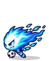

Wiki › Missões › Caçada: Cauda do Cometa
Caçada: Cauda do Cometa
Nível 385 Secundária Nebulosa de Órion

A história
Esta área está lotada de adversários do tipo Cometa Artilheiro. Passe por 40 deles aqui mesmo, na área de caça Cauda do Cometa!
O que fazer
- Vença 40x

Cometa Artilheiro
📍 Onde achar e como chegar
👾Quem: Cometa Artilheiro — Nível 390
🗺️Onde: 🎯 Cauda do Cometa (Nebulosa de Órion)
🧭Viagem: 🚀 Vá até a Estação Espacial (no Rio, com a Dra. Estela — precisa do Traje de Astronauta) e lá a Torre de Controle leva até Nebulosa de Órion.
🧭Caminho: de lá: Nebulosa de Órion → 🎯 Cauda do Cometa
📌Lá dentro: à direita no mapa (leste)
Recompensas
- ⭐ 25.658.954 XP
- 🪙 35.100 tostões
- 1x
 Pacotinho de Figurinhas
Pacotinho de Figurinhas
Ao terminar (pode ter surpresa!)
Isso é que é treino! Volte quando quiser: eles não param de aparecer.
➡️ Depois, libera: Grande Caçada: Cauda do Cometa